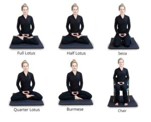

Медитація – це потужний засіб для зняття і управління стресом і звичка, яка допоможе знайти душевний спокій.

Медитацію широко рекомендують як оздоровчу практику – і не дарма.
Вона може допомогти:
- впоратися зі стресом;
- полегшити головний біль;
- при симптомах занепокоєння і депресії;
- поліпшити самосвідомість;
- відчути більше співчуття до себе та інших;
- поліпшити уважність.
Які бувають види і техніки медитації та як правильно медитувати, допомогли з’ясувати психотерапевт
Роман Мельниченко та
VeryWellMind.
Види медитації
Психотерапевт Роман Мельниченко, який вивчає наукові підходи до медитації і практикує їх, виокремлює такі основні види:
- медитація як релаксація:
- антистрес;
- відпочинок;
- для сну;
- медитація для досягнення результату;
- медитації на усвідомленість:
- для пізнання себе і своєї мотивації;
- духовна медитація.
Як медитувати
Виберіть тихе місце, де вас не будуть відволікати. Вимкніть телефон, телевізор та інші відволікаючі фактори. Якщо хочете
увімкнути музику, виберіть що-небудь спокійне.
Встановіть обмеження в часі. Поставте таймер. Для початку вам вистачить від 5 до 10 хвилин.
Створіть простір. Крім вибору часу, вам також необхідно знайти місце для практики.
Воно не повинне мати якийсь особливий декор,
але в ньому не має бути відволікаючих чинників.
Зверніть увагу на своє тіло. Зверніть увагу на своє тіло і влаштуйтеся зручніше. Ви можете сидіти, схрестивши ноги, на підлозі або на стільці,
якщо відчуваєте, що так буде зручно.
Якщо ви не можете сидіти на підлозі, це теж нормально. Знайдіть стілець, на якому ви зможете сісти прямо,
поставивши обидві ноги на підлогу.
Зосередьтеся на своєму диханні. Спробуйте зробити глибокий вдих, а потім повільно видихніть. Зверніть увагу
на відчуття при кожному вдиху. Коли ваш розум починає блукати, а це неминуче, зверніть увагу на свої думки, а потім відпустіть їх.
Положення рук. Можливо, ви бачили фотографії людей, що медитують з руками в різних положеннях.Ви можете спробувати будь-яку позу, яку бачили,
або просто покласти руки на коліна.
Коли зазвучить ваш таймер, розплющіть очі. Проаналізуйте, як ви себе почуваєте після практики. Якщо ви
заклякли після сидіння, потягування може допомогти вам розслабитися.
Основні принципи медитування
Зосередженість: потрібно концентруватися на чомусь одному ззовні або на відчутті всередині. Це робиться для того, щоб
заспокоїтися – гострі відчуття й емоції повинні відступити.
Перебування в сьогоденні: замість того, щоб зосереджуватися на минулому або майбутньому, медитативні практики передбачають
зосередження на теперішньому.
Це вимагає практики, оскільки багато хто з нас проживає більшу частину свого життя, думаючи про майбутнє або про минуле.
Змінений стан свідомості: з часом медитація може привести до зміненого рівня свідомості, такого собі трансу, який не є станом сну,
але і не зовсім звичайним станом неспання.
4 моменти, про які потрібно пам’ятати, коли почнете займатися медитацією
Послідовність – ключ до успіху.
Послідовна практика важливіша, ніж тривала. Це означає, що краще медитувати п'ять хвилин шість разів на тиждень, ніж 30 хвилин один раз
на тиждень.
Крім того, у вас більше шансів дотримуватися регулярної практики медитації, якщо ви почнете з коротких щоденних занять.
Практика не означає досконалість.
Регулярна практика має більше значення, ніж "ідеальна" практика. Це означає, що замість того, щоб занадто
багато думати про те, як краще сісти, яку техніку спробувати, коли ви сидите, як довго сидіти, вам потрібно просто сидіти і медитувати. У
будь-якому випадку, немає "неправильного" способу медитувати; будь-яка медитація краща, ніж нічого.
Блукати для розуму – нормально.
Якщо ви помітили, що ваші думки блукають, нічого страшного. Деяким людям, особливо перфекціоністам,
медитація може бути складним завданням.
Якщо вам не вдається позбутися думок навіть на деякий час, психотерапевт радить звернутися до
спеціаліста, який вас цього навчить.
ПОЗИ МЕДИТАЦІЇ ДЛЯ ПОЧАТКІВЦІВ
